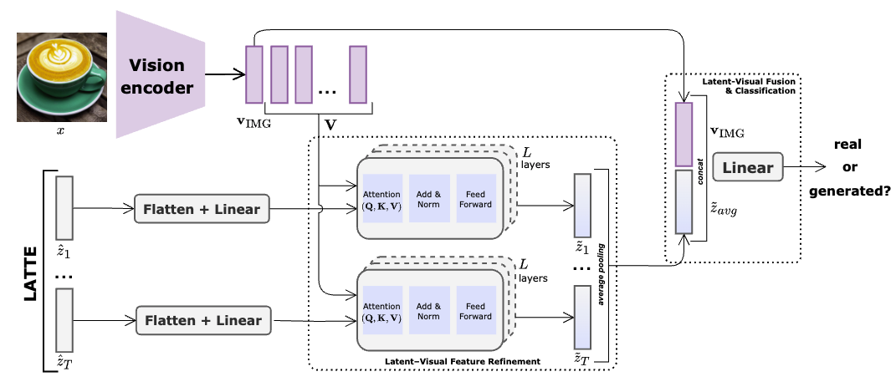

LATTE: Latent Trajectory Embedding for Diffusion-Generated Image Detection
We present LATTE - Latent Trajectory Embedding - a novel approach for AI-generated image detection, which models the evolution of latent embeddings across several denoising timesteps.